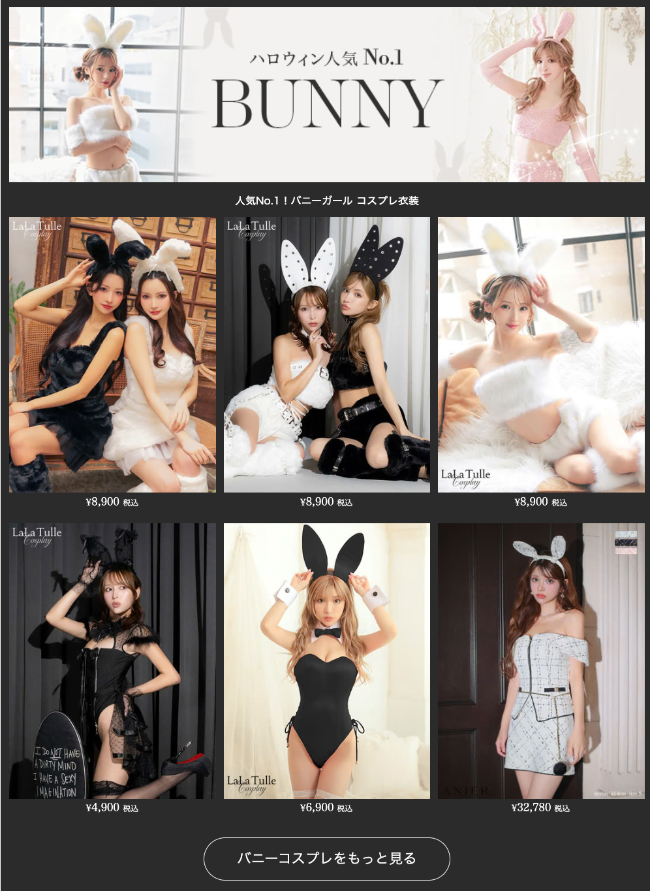

商品リスト閲覧数
+54% 増加LaLaTulle
商品探索の導線改善と効果検証
特集・ホーム・商品詳細の購買導線を改善。行動データから課題を捉え、UI設計・実装・検証まで担当しました。

ハロウィン特集の構成と商品一覧を改善
- 課題
- 縦に続くカテゴリと商品一覧。
- 判断
- 選び直しと商品への移動を短く。
- 変更
- 9点→6点、次にカテゴリ切替へ。
- 結果
- 秋の実績と11月の再改善を分けて評価。
カテゴリ選択を横並びに集約
カテゴリを横スクロールのメニューにまとめ、全商品・セールへのリンクも追加しました。


古くなったバナー画像を更新
2年間更新できていなかったバナー画像を、新しい画像に差し替えました。


長い商品一覧から、カテゴリ別の探索へ

ほかのカテゴリも下へ続く
- Cat
- Animal
- China dress

ほかのカテゴリも下へ続く
- Cat
- Animal
- China dress

10月31日のシーズン終了後：選んだカテゴリを同じ位置に表示
フッターに商品検索と案内を追加

おすすめ商品
ページ末尾で人気商品を再提示し、もう一度商品を探せる入口をつくりました。

簡単検索
カテゴリ・サイズ・色など、条件から探せる選択肢を増やしました。

Q&A
衣装選びや着用シーンの疑問に答え、ハロウィン関連の検索意図に対応する情報を補いました。
2025年9月26日〜10月25日・前年同期比
商品閲覧と売上が増加。
商品詳細閲覧数
+30% 増加売上
+9.33% 増加Google検索で一時2位台に。
2025.10.01 平均掲載順位 2.2位
操作と移動を分けた ヘッダーナビゲーション
- 課題
- 主要操作が複数のアイコンに埋もれていました。
- 判断
- 操作アイコンとページ移動を分離。
- 変更
- ヘッダーを整理し、重複する入口を削減。
- 結果
- 検索・カート到達の前後変化を観測。
操作はアイコンに、ページへの移動は言葉で。検索・お気に入り・カートを上段に残し、新作・ランキングは下段へ。利用が少なくバナーと重複していたブログ入口はヘッダーから外しました。


2026.02.03–2026.02.09 / 2026.02.10–2026.02.16（前後比較）
ホーム訪問者の検索到達率
+18.8%ホーム訪問者のカート到達率
+21.4%ブランドを先に伝え、 探しやすく。
- 課題
- セール中心の第一印象が高級感と合わない。
- 判断
- ブランドを主役に、セールを補助に。
- 変更
- バナーの優先順位変更・簡単検索の追加。
- 結果
- 簡単検索利用の前後変化を観測。
値引きより、ブランドの価値を。
主に2万円以上
高価格帯のドレス
プロのキャバ嬢
仕事で着る一着を探すお客様
非主力・アウトレット
セール対象の中心
セール中心の第一印象と、高級感が合わない。
この判断をPM・広告担当者に説明し、構成変更を提案。


2026.02.03–2026.02.09 / 2026.02.10–2026.02.16（前後比較）
閲覧量あたりの簡単検索利用が増加
簡単検索のタップ数 / 100PV
+34.9%ホーム訪問者のミニドレス到達率
+50.8%閲覧人数表示が購入に与える影響を検証
- 課題
- 商品閲覧が購入につながるか。
- 判断
- 閲覧人数表示の有無を比較。
- 変更
- PDPに過去24時間の閲覧人数を表示。
- 結果
- 当時の分析では購入率の有意差を確認できず。
- 過去24時間の閲覧人数を表示
- カート追加を比較
- 購入率を比較
- 継続するか判断

実験記録 · 2025.08.20–21
購入率の改善は確認できませんでした。
記録上の最終購入率
1.3–1.5%当時の購入率比較検定
p > .058月20日の記録では p=.76（表示対条件付き非表示）、p=.52（表示対非表示群）。8月21日にUIを取り下げ、次はカートから購入までの導線を検討しました。
当時の分析記録であり、新たな有意性検定ではありません。表示条件とb-dashの露出差があり、UI単独の因果効果とは解釈しません。